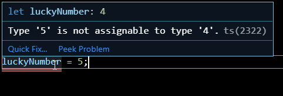
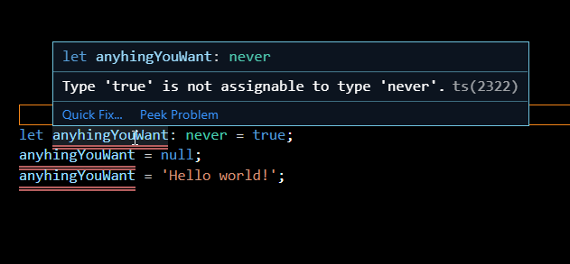
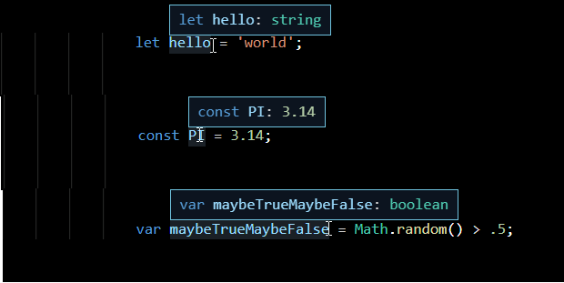
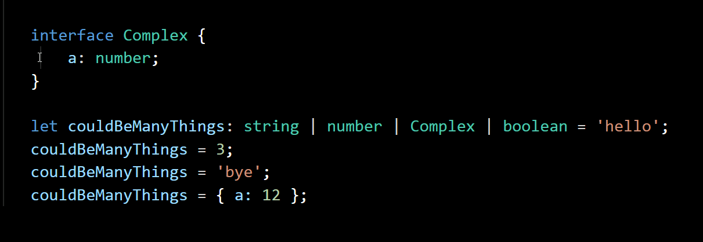
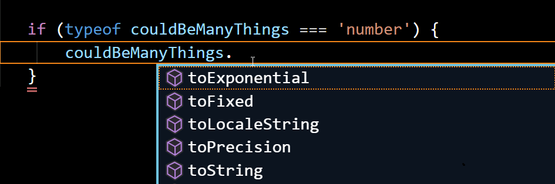
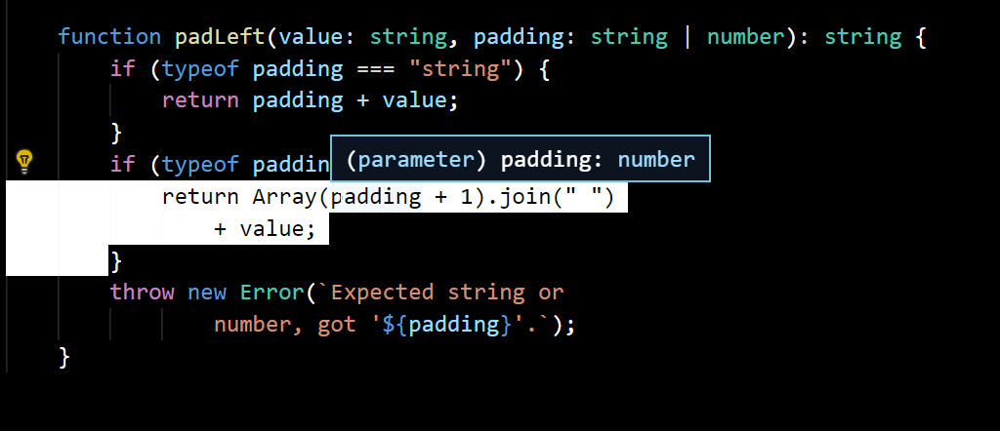
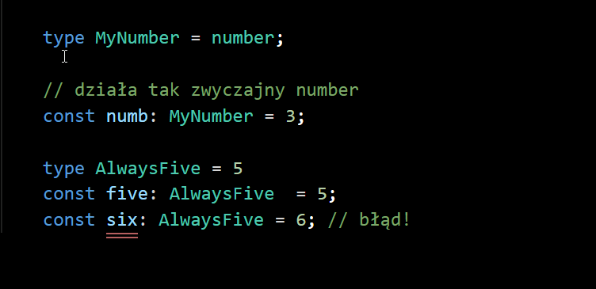
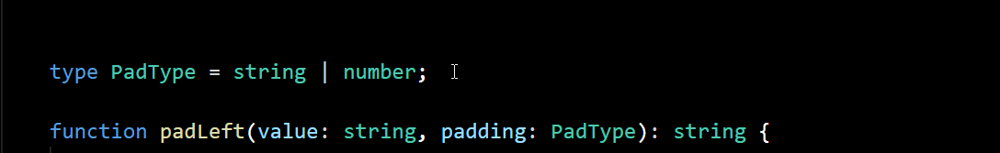
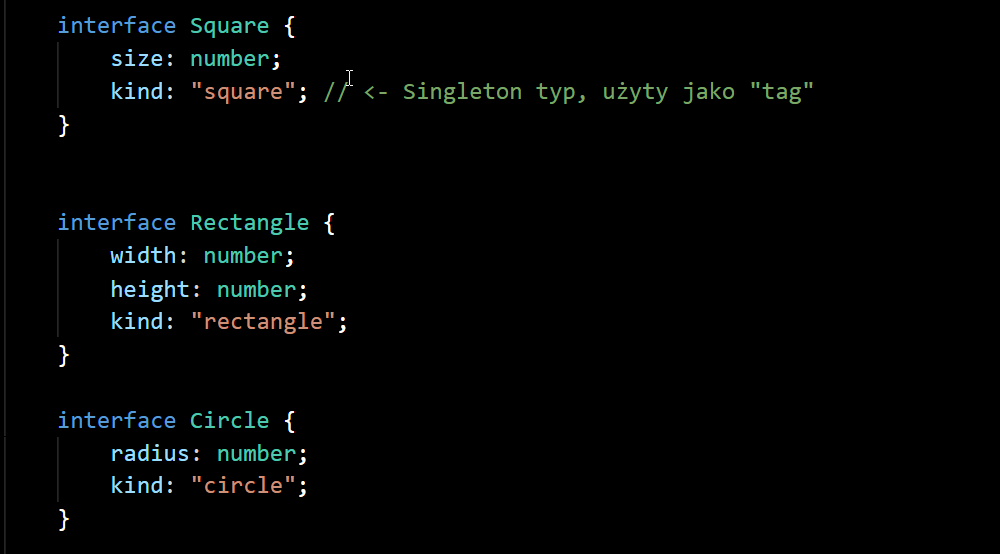

Typescript
w 30 minut
Dawid Czarnik
Czym jest typescript?
Typescript ≈ Javascript + Typy danych
Deklaracja zmiennej
let helllo = 'world';
let helllo: string = 'world';const PI: number = 3.14; var maybeTrueMaybeFalse: boolean = Math.random() > 0.5;
Typy Singletonowe
let luckyNumber = 4;

const immaString: 'immaString' = 'immaString';
const alwaysTrue: true = true;
Tablice
const ages: number[] = [27, 25];
const names: string[] = ['John', 'Jaine'];
Tablice - jako pary (tuple)
const weightNamePair: [number, string] = [27, 'John'];
Możemy łączyć tablicę oraz "tuple"
Typ - any
any to specjalny typ do którego możemy przypisać dowolną wartość.
Pozwala na "wyłączenie" sprawdzania typów. Przydatne gdy nie potrafimy wyrazić jakiegoś typu lub po prostu eksperymentujemy.
Typ - never
never to specjalny typ do którego nie możemy przypisać żadnej wartości
Symbolizuje wartość która nigdy nie istnieje. Byłby to np. typ zwracany z funkcji która nigdy się nie powodzi lub nigdy się nie kończy np. funkcja która wykonuję: while(true){}
Inferencja typów
Wypisywanie ciągle tych typów po dwukroku wygląda męcząco...
...naszczęście w sporej ilości przypadków Typescript jest w stanie samemu wydedukować sobie typ z kontesktu naszego programu.
Typowanie funkcji
function add(a, b) {
return a + b;
}
Wywołanie
add(3,5); // => 8
add([], '?????'); // => "??"
Typowanie funkcji
function add(a: number, b:number): number {
return a + b;
}
Wywołanie
add(3,5); // => 8
add([], '???'); // błąd
Typowanie obiektów
Interfejs y
interface IPerson {
name: string;
age: number;
sayHi(): void;
}
Deklarują kształt danego obiektu. Mogą zawierać pola jak i metody.
Interfejsy - użycie
Tak samo jak w Javascriptcie możemy "po prostu" tworzyć obiekty. Tak samo w Typescriptcie możemy "po prostu" tworzyć instancję naszych interfejsów
Zauważmy:
- Nie musimy typescriptowi deklarować, że user jest typu IPerson
- Typy są zgodne jeżeli ich wewnętrzna struktura jest taka sama. Takie typowanie nazywamy strukturalnym.
Klasy
class Student implements IPerson {
name: string;
age: number;
constructor(name: string, age: number) {
this.name = name;
this.age = age;
}
sayHi() {
console.log(`Imma ${this.name}!~~`);
}
}
Zieeeew
Czy to kolejna Java/C# ?

Odpowiedź brzmiałaby tak gdyby nie typescript ~ 2.1
Zaanwansowane typy danych
padLeft("world", 4) === " world";
padLeft("world", "hello ") === "hello world"
Idiomatyczne Javascriptowe API są często bardzo dynamiczne..
function padLeft(value, padding) {
if (typeof padding === "string") {
return padding + value;
}
if (typeof padding === "number") {
return Array(padding + 1).join(" ")
+ value;
}
throw new Error(`Expected string or
number, got '${padding}'.`);
}
function padLeft(value, padding) {
if (typeof padding === "string") {
return padding + value;
}
if (typeof padding === "number") {
return Array(padding + 1).join(" ")
+ value;
}
throw new Error(`Expected string or
number, got '${padding}'.`);
}
function padLeft(value, padding) {
if (typeof padding === "string") {
return padding + value;
}
if (typeof padding === "number") {
return Array(padding + 1).join(" ")
+ value;
}
throw new Error(`Expected string or
number, got '${padding}'.`);
}
function padLeft(value, padding) {
if (typeof padding === "string") {
return padding + value;
}
if (typeof padding === "number") {
return Array(padding + 1).join(" ")
+ value;
}
throw new Error(`Expected string or
number, got '${padding}'.`);
}
Wygląda prosto, zróbmy to w Typescriptcie!
function padLeft(value: string, padding: ???): string {
hierarchia klas, any?
unie!
function padLeft(value: string, padding: string | number)
: string {
Unie
Stworzenie uni jest łatwe, ale jak ją poźniej użyć?
Strażniki typu
(type guards)
Czyli udowodnijmy kompilatorowi typ danej zmiennej
Strażniki typu
w akcji
Aliasy typów
Pozwalają nadać alternatywną nazwę innemu typowi
type AlternatywnaNazwa = InnyTyp;
Aliasy typów
Szczególnie przydatne jeżeli używamy uni
Poznaliśmy
- Interfejsy
- Unię
- Strażniki typów
- Aliasy
Zobaczmy co się stanie gdy połączymy je razem! 🔥
Zadeklarujmy kilka interfejsów
Możemy teraz budować abstrakcje na tym zamkniętym zbiorze typów
function area(shape: Shape): number {
area zwróci nam pole dla danego Shape
function area(s: Shape): number {
switch (s.kind) {
case "square":
return s.size ** 2;
case "rectangle":
return s.height * s.width;
case "circle":
return Math.PI * s.radius ** 2;
default:
throw new Error(`Expected Shape, got ${s}`);
}
}
Pierw zobaczmy z czym mamy do czynienia. Wcześniej nadany tag się tutaj przydaje!
function area(s: Shape): number {
switch (s.kind) {
case "square":
return s.size ** 2;
case "rectangle":
return s.height * s.width;
case "circle":
return Math.PI * s.radius ** 2;
default:
throw new Error(`Unexpected obj:${s}`);
}
}
Dla kwadratu weźmiemy długość jego boku
(** - operator podnoszenia do potęgi)
function area(s: Shape): number {
switch (s.kind) {
case "square":
return s.size ** 2;
case "rectangle":
return s.height * s.width;
case "circle":
return Math.PI * s.radius ** 2;
default:
throw new Error(`Unexpected obj:${s}`);
}
}
Analogicznie postępujemy dla innych tagów
function area(s: Shape): number {
switch (s.kind) {
case "square":
return s.size ** 2;
case "rectangle":
return s.height * s.width;
case "circle":
return Math.PI * s.radius ** 2;
default:
throw new Error(`Unexpected obj:${s}`);
}
}
Należy rzucić wyjątek jeżeli zapomnieliśmy obsłużyć jakiejś opcji
Typescript wie jakie mamy typy w case'ach'
A więc co zrobiliśmy?
- Zbudowaliśmy abstrakcję na luźno, ze sobą powiązanych typach
- Różnie zainterpretowaliśmy daną zmienną zależnie od kontesktu
- W tym wszystkim wsparł nas kompilator
Wzorzec ten jest również znany jako Algebraiczne typy danych, otagowane unie i jest często używany w funkcyjnym stylu programowania
Co jeszcze typescript potrafi?
- Indeksowane typy
- Mapowane typy
- Uwarunkowane typy
- I wiele więcej!
Przydatne linki
DZIĘKUJĘ ZA UWAGĘ
Dawid Czarnik
Sekretna porcja prezetancji jeżeli wystarczy na to czasu
Indeksowane typy
(index types)
interface Person {
name: string;
age: number;
};
const person: Person = { name: 'Jarid', age: 35 };
Checemy móć zdefinować funkcję get getProperty(obj, key)
- Pozwoli nam w bezpieczny, dynamiczny sposób pobrać pola tego obiektu
- Zachowuje typ pobranego pola i nam go inferuje
let name: string = getProperty(person, 'name');
let age: number = getProperty(person, 'age');
let unknown = getProperty(person, 'unknown');
// ^^^^^^^ error, 'unknown' is not in 'name' | 'age'
Czy jest to możliwe?
Tak!
function getProperty<T, K extends keyof T>(
o: T,
name: K
): T[K] {
return o[name]; // o[name] is of type T[K]
}